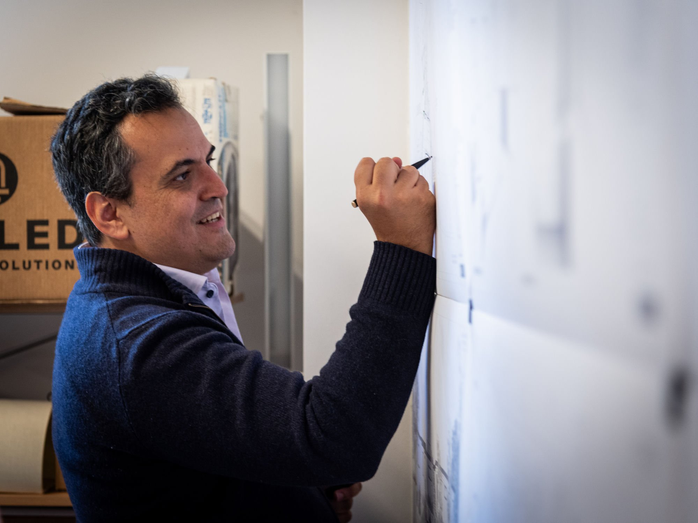
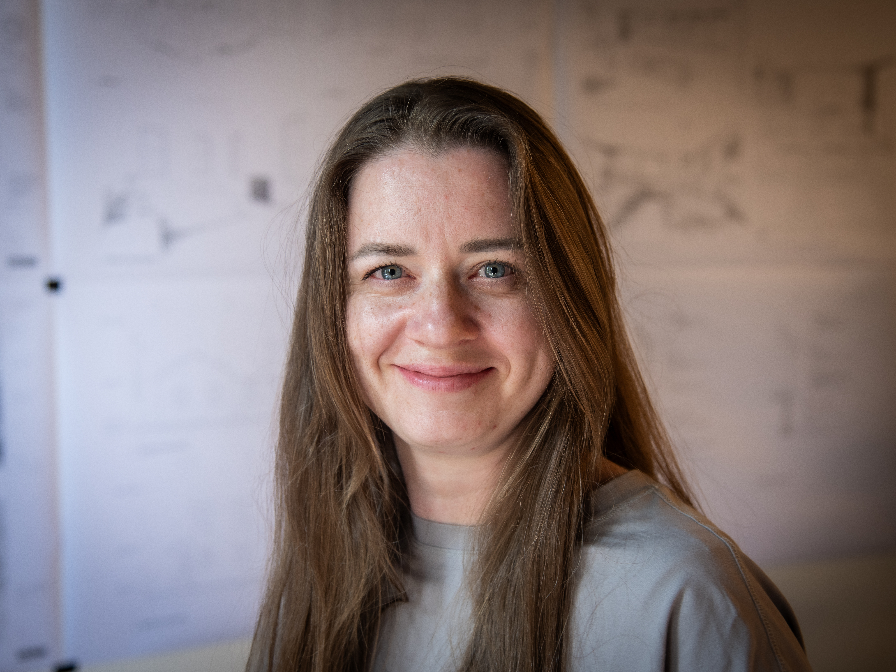

Dedicated to architecture that works in its landscape.
Beautiful buildings and landscapes are simply the ones we want to return to. Most of the time, the landscape is the thing our clients were drawn to, and it is our role to give them the most amazing views out, while impacting the exterior place as little as possible. However, sometimes a family compound or gathering point requires some scale and grandeur. Whatever the size, we try to make homes and businesses that are graceful, elegant, and light on the land.

Zander Auerbach
AIA, RA — Partner & ArchitectZander brings 15 years of experience in residential design, construction management, and advanced building systems. His work is guided by a commitment to nature-integrated modern architecture and a deep respect for the landscape.
Prior to founding the firm, Zander worked at Maryann Thompson Architects and the MIT Media Lab, where he managed large-scale R&D and construction projects with budgets ranging from $2M to $115M.
- Harvard University
- University of Massachusetts at Amherst
- Previously: Maryann Thompson Architects; MIT Media Lab
- Registered Architect (RA), AIA Member

Rodrigo Novelo Pastrana
ArchitectRodrigo brings an international perspective to architecture, with experience across residential, commercial, healthcare, and mixed-use sectors. His work is guided by a commitment to thoughtful design, technical precision, and spaces that balance performance with clarity and refinement.
Prior to joining the team, Rodrigo worked at Buro Happold and NGB Arquitectos, where he contributed to design development, technical coordination, and project delivery across multidisciplinary teams.
- University College London (UCL) — Master of Architecture in Architectural Design
- Previously: Buro Happold; NGB Arquitectos

Kate Vitvitskaia
DesignerKate brings over 12 years of experience in residential design and project development, with clients across the United States, Canada, Europe, and Australia. Her work balances architectural precision with buildability, and a strength in Revit-based design development and documentation.
- Saint Petersburg State University of Architecture and Civil Engineering — BArch
- Previously: Markexpo AB; YossiG Studio

Emily Ottinger
ArchitectEmily is a registered architect licensed in Maine, Massachusetts, and New York with 17 years of professional experience. Her practice spans academic, commercial, residential, museum, and life sciences buildings.
An accomplished painter, Emily brings a fine arts sensibility to every project. She has worked at Peter Eisenman Architects in New York, Nasrine Seraji in Paris, and Ann Beha Architects in Boston.
- Yale University — Master of Architecture
- Wellesley College — BA in Architecture
- Previously: Peter Eisenman (NYC); Nasrine Seraji (Paris); Ann Beha Architects (Boston)
- Licensed in ME, MA, NY — AIA Member, LEED® GA